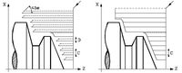
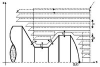

La sintaxis del ciclo fijo de desbastado en el eje X G68:
La estructura básica del bloque es:
G68 X Z C D L M K F H S E Q
X±5.5 Define la cota según el eje X, del punto inicial del perfil. Se programa en cotas absolutas y según las unidades activas, radios o diámetros.
Z±5.5 Define la cota según el eje Z, del punto inicial del perfil. Se programa en cotas absolutas.
 C5.5 Define el paso de mecanizado y se programa mediante un valor positivo expresado en radios. Si se programa con valor 0, el CNC visualiza el error correspondiente. Todas las pasadas de mecanizado se efectúan con este paso, excepto la última que eliminará el material sobrante.
D5.5 Define la distancia de seguridad a la que se efectúa el retroceso de la herramienta en cada pasada.
Si se programa D con el valor 0, la trayectoria de salida coincide con la trayectoria de entrada. Esto puede ser de interés para ranurar perfiles complejos, para utilizar estos ciclos en rectificadoras cilíndricas, etc.
Cuando no se programa el parámetro D la retirada de la herramienta se efectúa siguiendo el perfil hasta la pasada anterior, distancia C (figura de la derecha).
Se debe tener en cuenta cuando no se programa el parámetro D que el tiempo de ejecución del ciclo es mayor, pero la cantidad de material a comer en la pasada de acabado es menor.
 L±5.5 Define la demasía que se dejará en X para efectuar el acabado. Se define en radios y si no se programa, se tomará el valor 0.
M±5.5 Define la demasía que se dejará en Z para efectuar el acabado.
Si "L" o "M" se programan con valor negativo la pasada de acabado se realiza en arista matada (G05). Cuando ambos parámetros se programan con valor positivo, la pasada de acabado se realizará en arista viva (G07).
Si no se programa el parámetro "M", la demasía tendrá el valor indicado en el parámetro "L" y será constante en todo el perfil.
F5.5 Define la velocidad de avance de la pasada final de desbaste. Si no se programa o se programa con valor 0, se entiende que no se desea pasada final de desbaste.
H5.5 Define la velocidad de avance de la pasada de acabado. Si no se programa o se programa con valor 0, se entiende que no se desea pasada de acabado.
S4 Define el número de etiqueta del bloque en el que comienza la descripción geométrica del perfil.
E4 Define el número de etiqueta del bloque en el que finaliza la descripción geométrica del perfil.
Q6 Define el número de programa que contiene la descripción geométrica del perfil.
Este parámetro es opcional y si no se define el CNC entiende que el perfil se encuentra definido en el mismo programa que contiene la llamada al ciclo.


{kind=link}
{kind=link}
{kind=link}